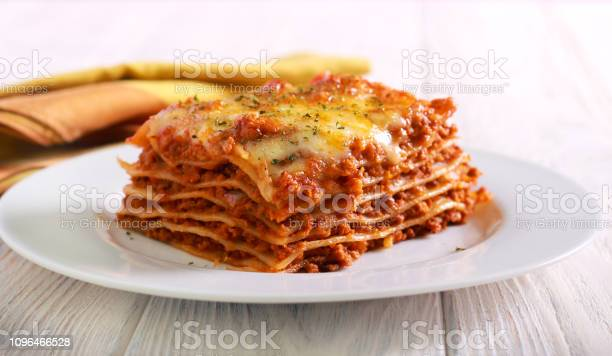

Lasagna

How to make the perfect lasagna
One of the most loved foods in the world is finally here! This is a traditional Italian Lasagna, made the Italian
way with layers of slow cooked Bolognese ragu and cheese sauce.
Ingredients:
- Lasagna pasta
- Ground beef
- Tomato sauce
- Salt and black pepper
- Onion
- Tomato
- Mozzarella cheese
Steps
- Sauté the ground beef seasoned with salt and black pepper until it becomes soft and golden.
- Add the onion and tomato and let it sauté a little longer to add the sachet tomato sauce.
- Adjust the seasonings, and start assembling.
- Keep interspersing a layer of pasta, a layer of bolognese sauce, and a layer of mozzarella cheese until the top of the mold.
- The ideal is to finish with the cheese and take it to the oven to bake for 30 min at 180 degrees.